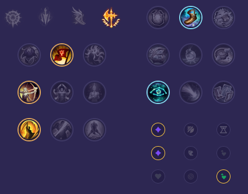

Starter: 🔵 Pisklę Podmuszka Mikstura Zdrowia Core Bulid: Pogromca Krakenów Nagolenniki Berserkera Łamacz Falangi Full Bulid: Taniec Śmierci Koniec Rozumu Jak'Sho Zmienny

Słaby przeciwko: - Nocturne - Briar - Shen - Kindred - Amumu - Ivern Dobry przeciwko: - Viego - Xin Zhao - Vi - Rengar - Volibear - Warwick